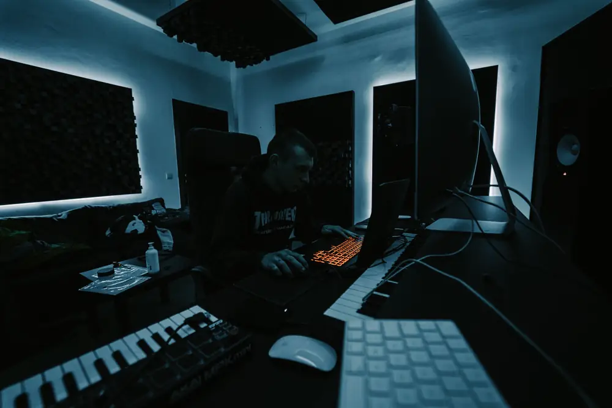

Equipment
See the software and gear most beginners look at first, and filter it by type.
Browse the equipment
Learn the tools, process, and craft behind making beats — from your first kick drum to a finished track.
Beat-making is the process of composing instrumental music — typically built around drums, bass, melody, and samples — using software and hardware tools rather than a full live band. It's the foundation of genres like hip-hop, trap, Afrobeat, and amapiano, and it's more accessible today than ever, with many producers starting from nothing more than a laptop and free software.
BeatCraft exists to walk you through the essentials: the gear worth knowing about, the actual step-by-step process of building a beat, the genres you can start with, and how to get started without being overwhelmed.
See the software and gear most beginners look at first, and filter it by type.
Browse the equipmentFollow seven steps from choosing a tempo to exporting your beat, and check them off as you go.
Follow the processLearn what makes boom bap, trap, Afrobeats, and amapiano sound different, and how to start a beat in each.
Explore the genresAsk a question or suggest a topic you would like the site to cover.
Get in touch